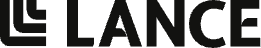

Chief of Staff take-home · Basav Sharma · November 2026Everything I made for the take-home, in one place. Start with the thinking deck; it links to each app and file below. The apps are live and run on sample data.
PDFs. Links inside each deck open the live apps.
Part 1, the week from Monday 9 AM. Part 2, the onboarding plan and the investor update. Part 3, the short-term and long-term fix for each fire. Appendix A to E has one card per tool.
Open the PDF 2Part 2B · 13 slidesThe deck that goes to existing investors with the CEO’s email: results against the July plan, Q4 priorities and three priority introductions.
Open the PDFEach opens with a short quick tour. At Lance they would sit on Lance’s own domain, behind work-email sign-in.
My week, Monday to Friday. Every block shows what I do, what I send and why, with each email and Slack drafted and waiting for approval.
Open the app 4Part 2A8 hires in 3 weeks, about 26 tasks each, 5 owners. Tick tasks, add a hire, and see who is ready for Day 1.
Open the app 5Part 2BThe same figures as the investor deck, live: ARR, hotels, contracted backlog, cash, runway and July goals against results.
Open the dashboardThe workbook behind the apps, plus one optional extra.
The one file behind everything: 18 tabs for the inbox, calendar blocks, messages, hires, tasks and investor numbers, with 101 live formulas.
Download .xlsxA Claude agent that drafts, never sends, my daily loop, plus the Google Sheets kits that make both apps live for the whole team. The week runs without them.
About the numbers. Lance’s internal figures aren’t public, so the investor numbers are my estimates, marked *, until finance confirms. Customer quotes are word for word from Lance’s published customer stories.
Ticks and edits. In these demos, ticks save in your browser. Plugged into the Google Sheet with the kit, every tick and approval is shared live with the team.